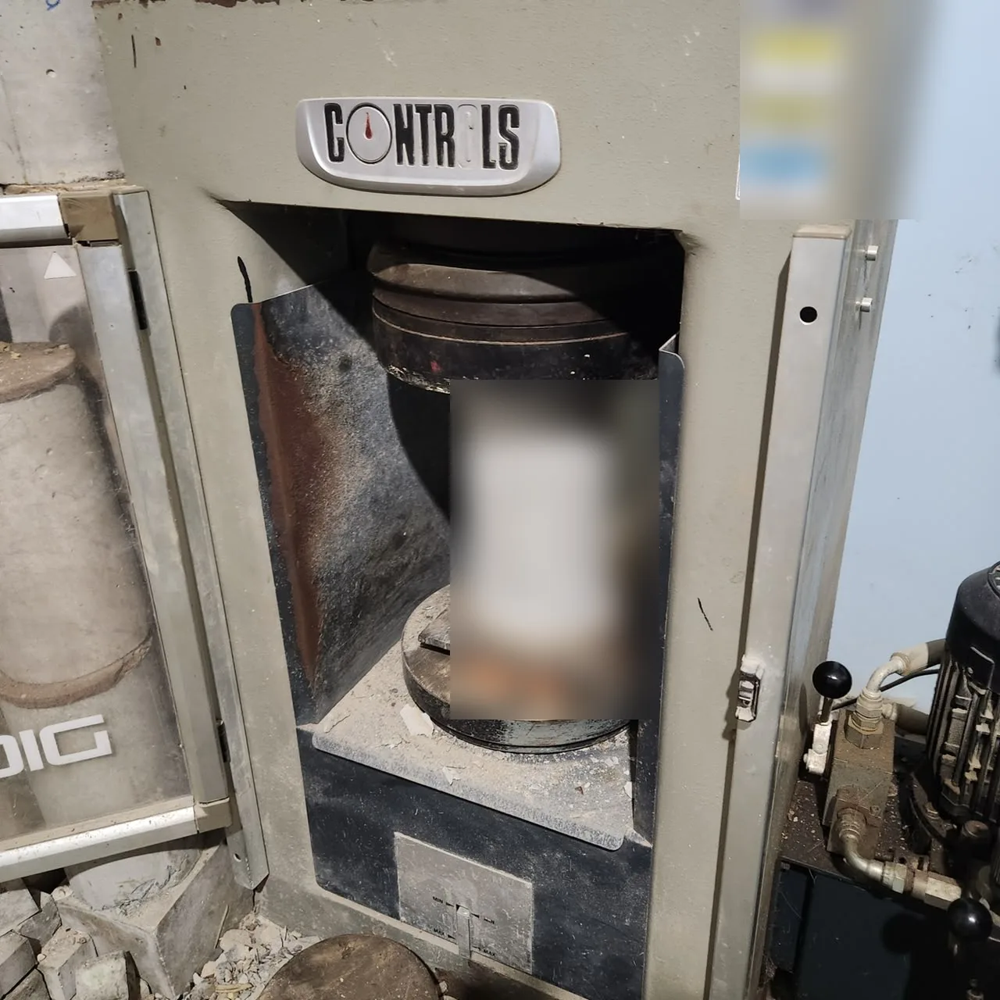
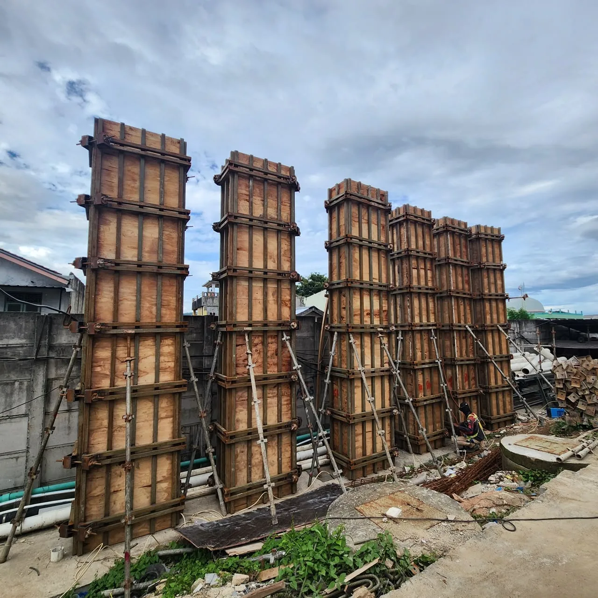

Kerja praktik: quality control fondasi tiang bor
Membantu pengawasan pekerjaan fondasi tiang bor, pile cap, dan struktur bawah, lalu menganalisis produktivitas tujuh alat berat dari pengamatan waktu siklus di lapangan.
- Acara atau tempat
- Proyek gedung pusat perbelanjaan di Sumatra, di pihak kontraktor pelaksana
- Tahun
- 2026
- Peran saya
- Mahasiswa kerja praktik, bagian Quality Control.
- Hasil
- 1 Juli – 1 September 2026
- Perangkat lunak
- Microsoft Excel
- Jenis
- Kerja praktik, Perhitungan
Pekerjaan yang diawasi
- Fondasi tiang bor D800 panjang 12 m, beton f′c 25 MPa, tulangan 14D22 dengan sengkang spiral D13; bore log dicatat tiap 2 m.
- Pile cap, fondasi tapak, tie beam, dan galian ground water tank dengan dinding shotcrete.
- Uji slump beton segar dan pemeriksaan surat jalan material di lapangan.
- Hitungan volume galian dan bill of quantity tulangan untuk pekerjaan harian.
Tinjauan khusus: produktivitas tujuh alat berat
Waktu siklus tiap alat dicatat di lapangan, lalu produktivitas teoretis dan aktual dihitung dengan persamaan Permen PUPR Nomor 8 Tahun 2023. Utilisasi U = waktu operasi ÷ waktu pengamatan. Persentase antaralat tidak diperingkat langsung karena jendela waktunya berbeda (480 menit; truck mixer 210 menit; concrete pump 107,60 menit).
Lihat data
| U | |
|---|---|
| Excavator | 72,92 |
| Mini excavator | 72,71 |
| Dump truck (per unit) | 75 |
| Truck mixer | 63,81 |
| Rotary drilling rig | 72,92 |
| Tower crane | 68,75 |
| Concrete pump | 54 |
| Alat | Sampel | Laju dasar | Laju aktual | Satuan | Waktu | U (%) |
|---|---|---|---|---|---|---|
| Excavator | 30 siklus | 127,99 | 93,33 | m³/jam | 480 menit | 72,92 |
| Mini excavator | 30 siklus | 56,57 | 41,13 | m³/jam | 480 menit | 72,71 |
| Dump truck (per unit) | 15 rit | 15,145 | 11,359 | m³/jam | 480 menit | 75,00 |
| Truck mixer | 3 rit | 21,69 | 13,84 | m³/jam | 210 menit | 63,81 |
| Rotary drilling rig | 15 putaran | 9,83 | 7,17 | m/jam | 480 menit | 72,92 |
| Tower crane | 3 angkatan | 5,37 | 3,69 | angkatan/jam | 480 menit | 68,75 |
| Concrete pump | 3 muatan | 21,69 | 11,71 | m³/jam | 107,60 menit | 54,00 |
Rantai produksi dan keserasian armada
Produktivitas sistem pekerjaan tanah ditentukan alat terkecil dalam rantai: tiga dump truck (34,077 m³/jam) di bawah excavator (93,33 m³/jam). Model memberi 272,616 m³/hari, selisih 3,33 % dari catatan ritase lapangan 282,000 m³/hari. Faktor keserasian (match factor) tiga unit hanya 0,637, jadi excavator masih menunggu armada.
- Tambah dump truck keempat secara bertahap (MF 0,850), ukur ulang antrean sebelum menambah unit kelima.
- Atur interval kedatangan truck mixer 18–20 menit sesuai waktu tuang rata-rata 19,37 menit untuk menghindari cold joint.
- Siapkan material dan rigging sebelum slot angkat tower crane; waktu tunggu tercatat 65 menit per hari.
- Pasang casing sementara sejak awal pada lapisan rentan runtuh di lubang bor.
Lihat data
| MF | |
|---|---|
| 3 unit (di lapangan) | 0,64 |
| 4 unit (usulan bertahap) | 0,85 |
| 5 unit | 1,06 |
Gambar dan video





Nama proyek, pemilik, kontraktor, dan data uji milik instansi tidak ditampilkan. Angka produktivitas adalah hasil pengamatan dan pengolahan saya sendiri. Label benda uji, stiker kalibrasi, dan layar alat di foto dikaburkan.